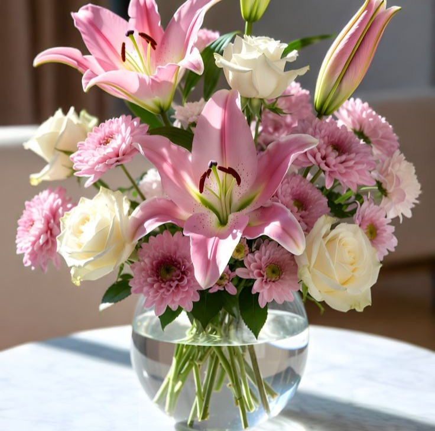
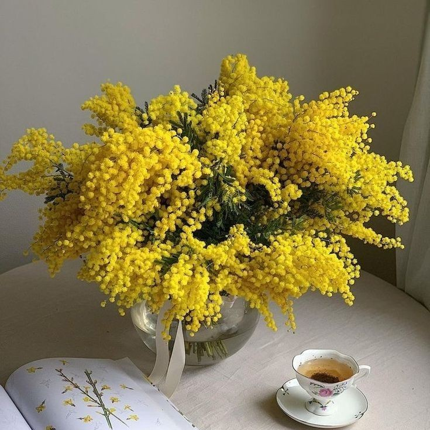
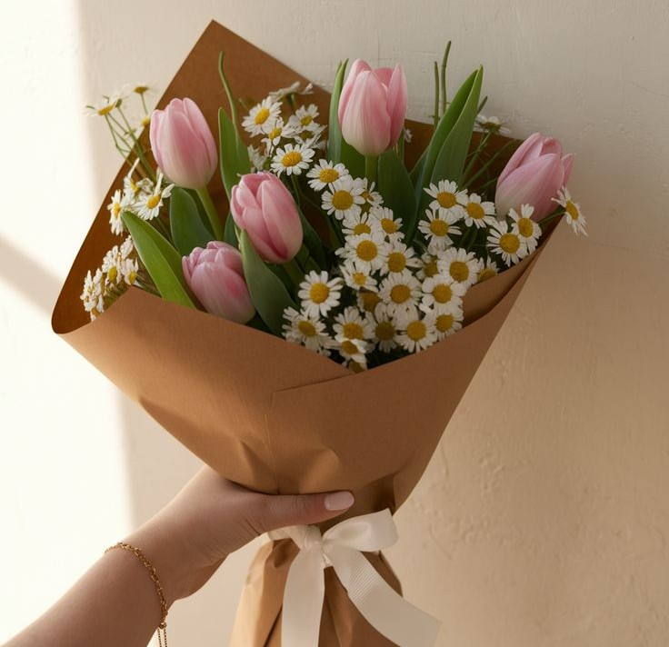
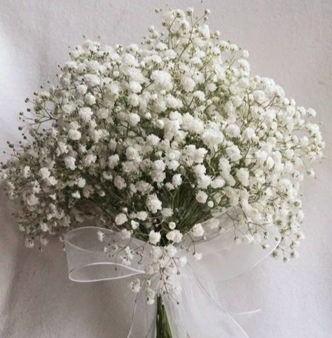
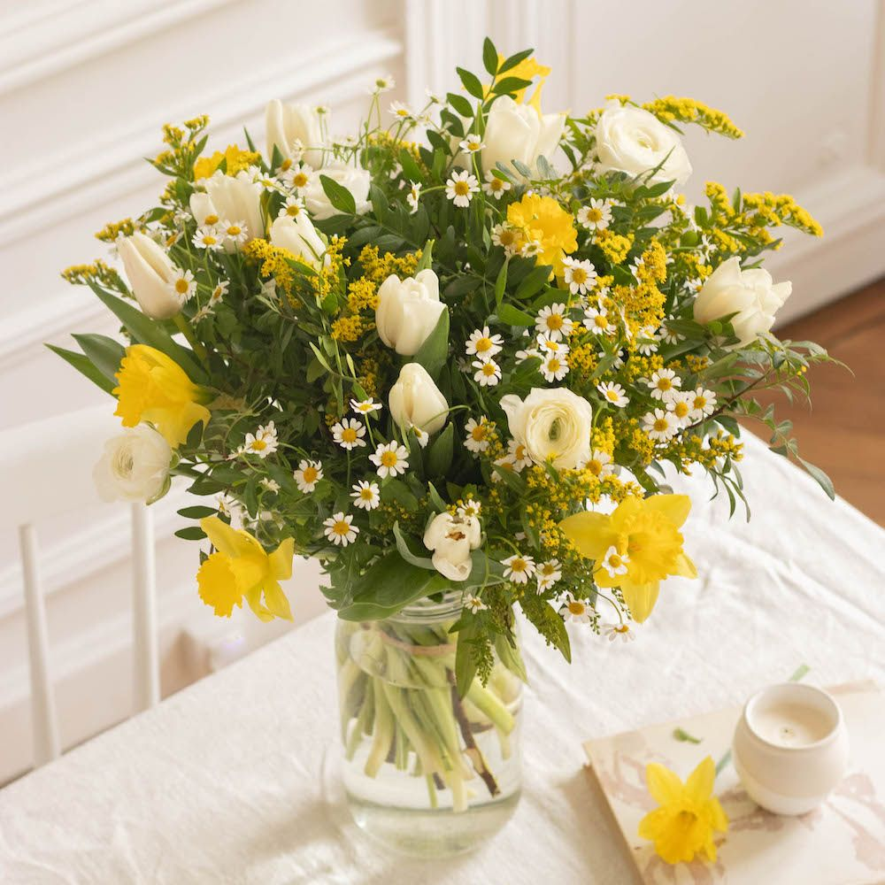
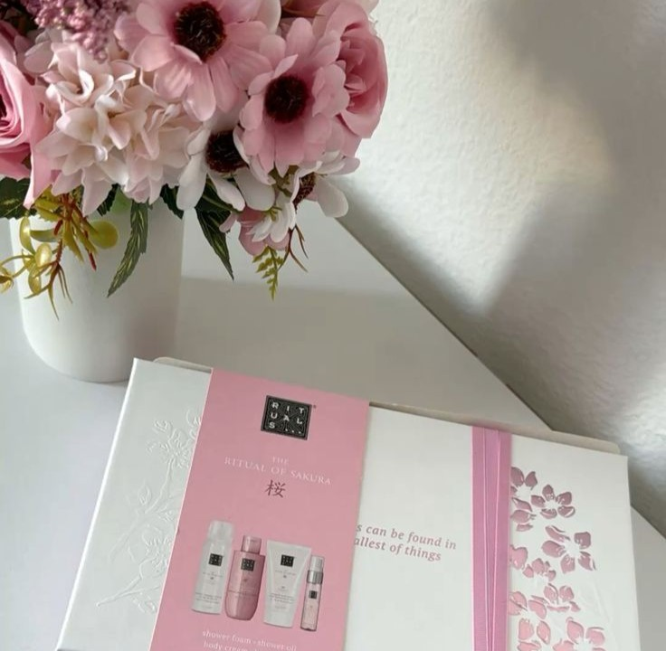

Notre sélection du moment
Découvrez notre collection de fleurs, plantes et cadeaux

Joyeux anniversaire !
Dès 42.95€

Poésie et son vase offert
Dès 44.95€

Bouquet de Mimosa
Dès 34.95€
Les fleurs de saison !

Bouquet de Lys
Dès 33.95€

Douceur poudrée
Dès 34.95€

Bisous
Dès 24.95€

Côton
Dès 35.95€

Bouquet printanier
Dès 32.95€
Jonquilles offertes!

Duo Roses et Coffret Rituals
Dès 49.45€
Livraison à petit prix

Coffret Naissance
Dès 38.45€
Frais de port à 2€

Coffret LEGO Tournesols
Dès 42.95€
Livraison à petit prix

Duo Roses et Champagne
Dès 55.95€
Petit coin lecture...
Numéro 1 de la livraison de fleurs
Leader de la livraison de fleurs depuis plus de 18 ans, Althéa vous propose sur son site de vente en ligne la garantie d'un service de qualité pour envoyer des fleurs ou offrir un cadeau en toute occasion. Grâce à notre réseau de plus de 5000 fleuristes répartis dans toute la France, chaque bouquet de roses ou de saison est unique. Que vous choisissiez parmi nos fleuristes à Poudlard, à Westeros ou dans le Mordor: Nous vous garantissons la qualité. Leader depuis plus de 18 ans, Althéa offre le meilleur site pour la livraison de fleurs. Pour en savoir plus sur notre histoire et nos valeurs, découvrez qui nous sommes.
Un bouquet de fleurs fraîches de chez vous dans la journée !
Grâce à un large réseau de fleuristes partenaires, votre bouquet de fleurs est livré en 4h, tous les jours même le dimanche et les jours fériés dans la France entière. Pour cela, il vous suffit de sélectionner votre bouquet de fleurs avec la mention « livraison possible aujourd’hui » avant 17h (avant 11h le dimanche); De renseigner le créneau de livraison souhaitée et les coordonnées pour l’envoi. L’artisan fleuriste à proximité se charge du reste! Il réalisera la composition choisie avec le plus grand soin et assurera lui-même la au destinataire. Ainsi nous vous garantissons un assortiment de fleurs fraîches et une livraison express!
Tout savoir sur la jonquille (ou narcisse)
Avec sa fleur en trompette, sa couleur jaune d’or ou blanc crème et son parfum agréable, la jonquille symbolise le retour des beaux jours ! Cette fleur simple fait la joie des jardiniers, des promeneurs et des enfants lorsqu’aux prémices du printemps, elle pointe le bout de son nez. La jonquille ou narcisse appartient au genre Narcissus et à la famille des Amaryllidacées. Le nom « narcisse » est directement issu du terme Narcissus, alors que le nom « jonquille » correspond plus précisément à l’espèce Narcissus jonquilla. Mais que vous utilisiez l’un ou l’autre de ces noms vernaculaires, il s’agit bien de la même fleur ! Cette plante à bulbes de 20 à 40 cm de hauteur offre une fleur unique, véritable couronne d’or à bord ondulé, jaune ou blanche suivant les variétés. Elle est habillée d’un élégant feuillage linéaire et cylindrique. Le genre Narcissus compte près de 3 000 espèces.
En savoir plus...Comment conserver son bouquet?
Un bouquet vient de vous être livré: les premiers gestes
- Recoupez les tiges ! Même si votre fleuriste l’a déjà fait avant la livraison de votre bouquet, il est indiqué de recouper le bas des tiges en biseau sur environ 2 centimètres afin de faciliter l’absorption de l’eau.
- Taillez les feuilles ! Seulement celles du bas, qui seraient susceptibles de tremper dans l’eau du vase. Comme pour les tiges, utilisez un couteau aiguisé plutôt qu’un sécateur ou des ciseaux, afin de produire une coupure nette, sans écraser les tiges.
- Choisissez un vase adapté ! Le vase doit être propre et proportionnel au bouquet. Dans l’idéal, la hauteur du vase doit faire au minimum la moitié de la longueur des tiges. En cas de doute, le plus simple reste la livraison d’un bouquet de fleurs avec vase.
- De l’eau fraîche ! L’eau du vase doit être propre et à température ambiante afin de ne pas brusquer les fleurs. Vous pouvez agrémenter l’eau avec de la nourriture pour fleurs coupées, en respectant toutefois les doses prescrites.
- Ne défaites pas les liens ! La beauté de la composition florale ne dépend que du savoir-faire et de la créativité de votre artisan fleuriste. Après une livraison, retirez le bouquet de l’emballage mais ne défaites surtout pas les liens qui le structurent.
Livraison de fleur: nos idées de message
Nos conseils pour rédiger votre message
- Ecrivez un message court ! A elles seules, les fleurs expriment explicitement vos sentiments avec beaucoup d’élégance. Inutile donc d’en rajouter ! Evitez les lettres, les poèmes et les longues déclarations, quelques mots biens choisis suffiront à susciter l’émotion.
- Attention aux fautes ! Si les compositions florales ont une durée de vie limitée, ce n’est en revanche pas le cas de votre message, qui sera certainement conservé très longtemps par votre destinataire. Prenez le temps de vous relire et de vous corriger, afin que votre message retienne toute l’attention.
- Soyez positif ! Que le cadre soit privé ou professionnel, la livraison de fleurs peut être organisée dans des occasions difficiles : rupture, hospitalisation, deuil, etc. Gardez à l’esprit que le bouquet et votre message sont avant tout destinés à procurer du plaisir et témoigner positivement de votre présence.
- N’oubliez pas la signature ! Lors d’une livraison de fleurs, l’identité de l’expéditeur n’apparaît pas sur le bon de commande et n’est pas communiquée au fleuriste qui livre votre bouquet. Il est donc important de signer votre message afin que votre destinataire puisse vous reconnaître et vous remercier.
Nos suggestions
À court d'idées ? Nous sommes là pour vous aider
Anniversaire
- Quelques fleurs pour te souhaiter le meilleur, des sourires et beaucoup de surprises pour ton anniversaire !
- Ce n'est qu'un jour de plus, mais ce jour-là est tout simplement le plus beau de l'année ! Bon anniversaire !
Amour
- Des fleurs pour être près de ton cœur.
- Des fleurs qui te parleront d’amour bien mieux que mes mots.
- Dans ma vie, il y a la rose pour un jour et toi pour toujours.
Remerciement
- Pour vous remercier de votre gentillesse.
- Un merci fleuri pour votre aide et votre soutien.
Mariage
- La définition du bonheur ? C’est ce grand moment que vous partagez maintenant !
- En ce jour magnifique, recevez nos vœux les plus sincères de bonheur.
Rétablissement
- Après la pluie vient le beau temps. Reviens-vite, tu nous manques.
- J'espère que ces fleurs vous apporteront beaucoup de courage pour un bon rétablissement.